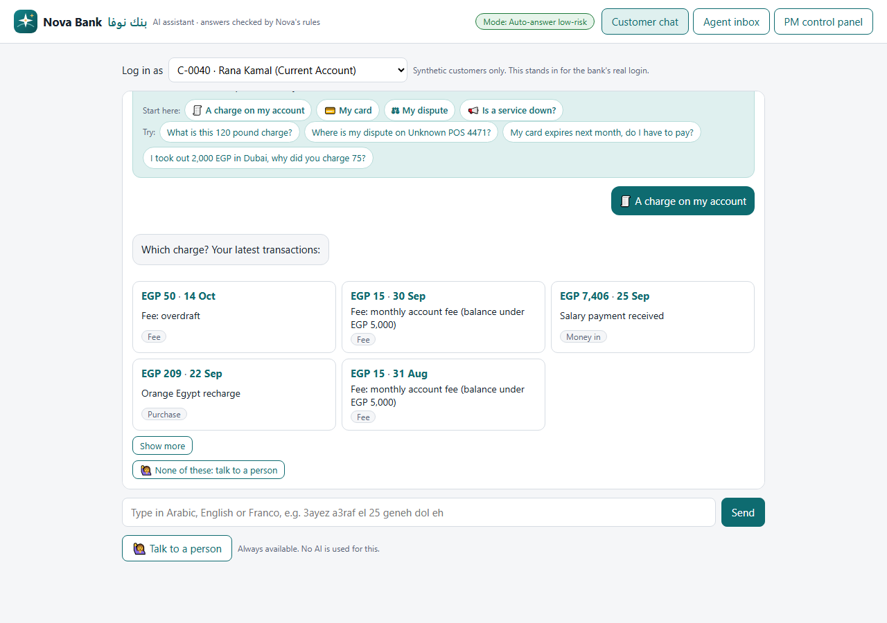
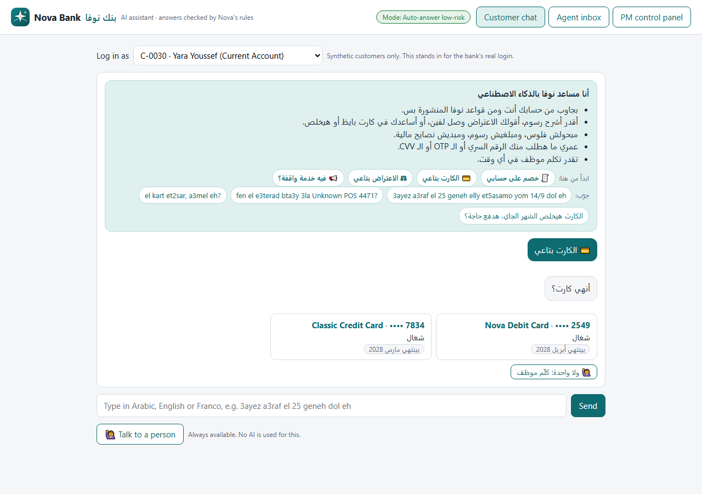
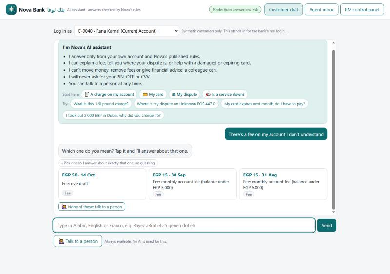
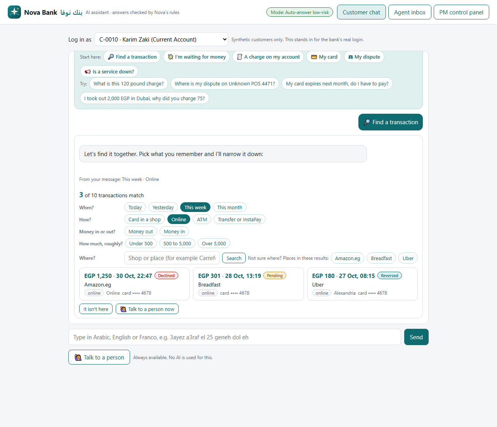
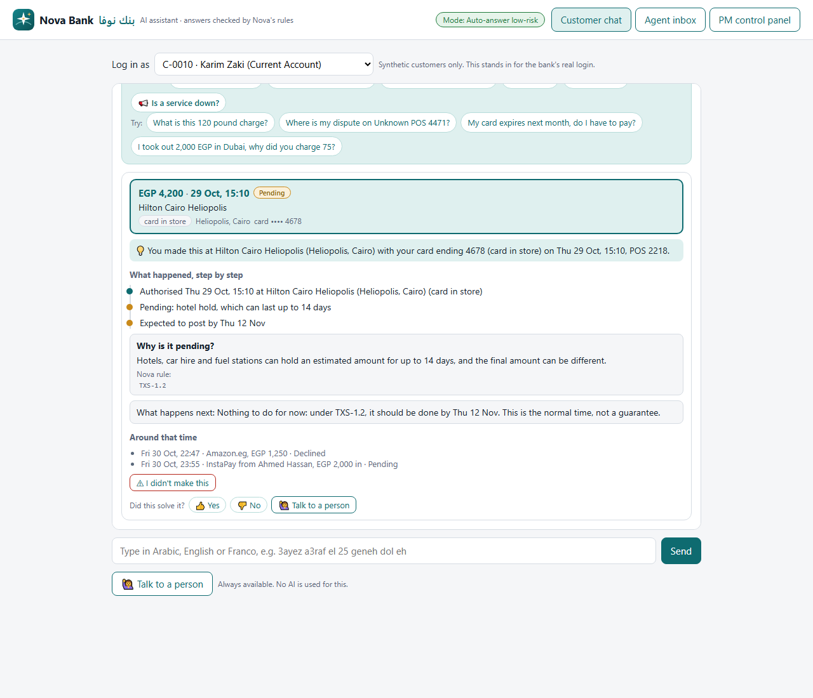
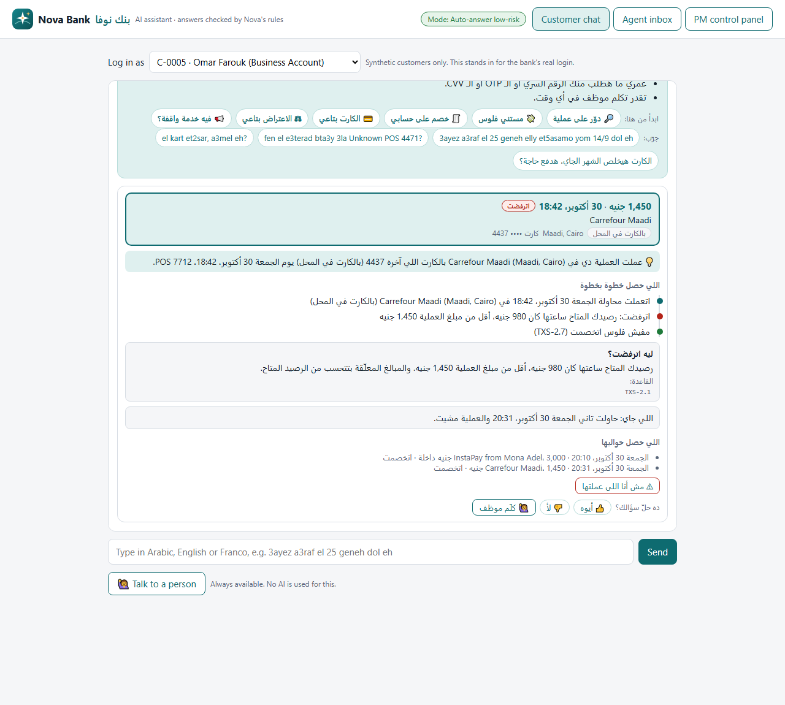
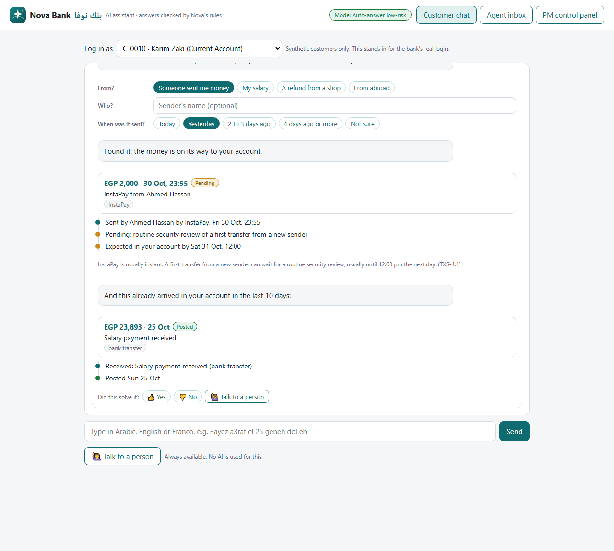
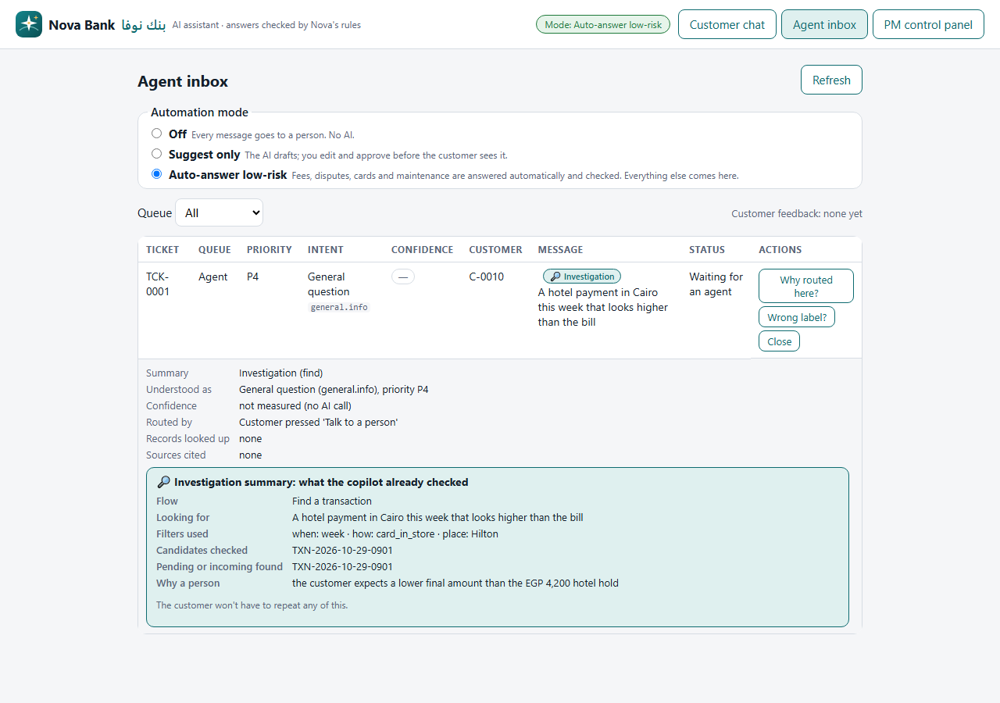

Phase 3 · Prove & Ship · linear
Integration & UX
Goal: a working MVP inside a mock Nova app where every wrong or risky moment lands safely with a person, and every conversation is logged for measurement.
What was built





Record picker: the customer points at what they mean (1.0.12)
Customers often don't say which charge, card or dispute they mean. Instead of guessing, the chat lets them pick it, the way a support agent would ask "which one?". Built in code from the logged-in customer's own records only, with no AI call to build a list.
| Piece | What the customer sees | Safety |
|---|---|---|
| "Start here" chips | A charge on my account · My card · My dispute · Is a service down? | Opening a list calls no AI |
| Transactions | Amount and date in bold, merchant, a tag (Fee, Purchase, ATM / cash, Money in), and the linked record for a fee; latest 5, "Show more" | Only this customer's records |
| Cards | Card name and •••• last 4, status (active, blocked, new card on its way with the date), expiry | Never more than 4 digits |
| Disputes | Dispute ID and amount, merchant, stage, decision target (DSP-3), missing documents | Dates from the record and the rule |
| After a tap | A fee is answered at once; a card offers damaged, expiring, where is my new card, or lost; a dispute offers status or documents; a payment they don't recognise goes to the Fraud team | Lost card and unknown payment go through the fraud word list first |
| "Which one do you mean?" | When a question names no amount, date or merchant and two or more records fit, the copilot shows them as cards instead of guessing | Never on fraud; not for a damaged card (same answer for any card) |
| Always | "None of these: talk to a person" | No AI |
The tapped record is pinned as the answer's main source and is always cited. Each turn logs picker_shown and picked_record_id; the PM control panel counts pickers shown, picks, picks answered and picks marked solved. Eval: 4 new cases (K1 to K4), all pass.
Transaction investigator (1.0.13, eval SHIP)
The copilot works with the customer to find the exact transaction, explains its status and history step by step, and checks for money on its way before handing over. The screens are deterministic code over the customer's own records and Nova's transaction rules (TXS), with no AI call; since 1.0.13 the AI knows the same rules, so typed questions get the same answers. On by default (INVESTIGATE=off turns it off). Tested: 9 investigator checks and 5 typed questions in the eval, 15 free unit checks. Details: docs/INVESTIGATOR.md.





| Pillar | How the investigator keeps it |
|---|---|
| Trust and reliability | Honest statuses from the records; every reason cites a rule; expected times are "the normal time, not a guarantee"; nothing invented |
| Explainability | A memory jogger (where, card, time, terminal), a step-by-step timeline, "why", "what happens next", and what happened around it |
| Human agency | The customer chooses every step; "Did this solve it?" and "Talk to a person" end every flow; "I didn't make this" goes to the Fraud team; handoffs carry the full picture |
| Bank and law | Only the customer's own data (Banking Law 194/2020); the sender's name only for money in; last 4 card digits; no promise that a merchant's refund will happen |
Every fallback, designed
| Moment | What the customer sees | Where it goes | Status |
|---|---|---|---|
| Fraud signal (word list or AI) | Red reply at once: block card (with confirm), 24/7 hotline 19999, never share a code; reference number | Fraud queue, P0, no AI for word-list matches | Done |
| Complaint or sensitive | Apology and a reference number at once; vulnerable customers to the head of agents | Complaints or Supervisor queue | Done |
| Low confidence | "I wasn't sure enough…", up to 2 safe options and a person; ticket created anyway | Agent queue; resolved if the customer picks an option | Done |
| Broken output or a failed check | "I couldn't answer that safely…" after one retry; never a broken screen | Agent queue | Done |
| No source in the rules | "Nova's rules and your records don't cover this, and I won't guess" | Agent queue | Done |
| Slow reply | Hands off after the 15-second limit ("assistant is busy") | Agent queue | Plan asks 6 s; today 15 s |
| Too many messages | "Please wait a moment", no AI; fraud still goes first | None, or Fraud | Done |
| Network error | "Nothing was lost", Try again or a person | None | Done |
The 7 ticket states
resolved_pending_confirmationanswered by the AI, waiting for "Did this solve it?"moved_to_agentwaiting for an agentmoved_to_fraudwith the Fraud teamdraft_pending_approvalSuggest-only: an AI draft waiting for reviewapprovedreviewed and sent to the customerresolved_by_customer_choicethe customer picked an option and got an answerclosedclosed by an agent (undo within 10 seconds)
Mapping to the blueprint's state names: to confirm with the blueprint owner.
The log, one line per message
logs/messages.jsonl, masked, never committed.
time · message ID · customer ID · masked message · language · intent · priority · confidence · injection flag · action · fixed-reply ID · queue · ticket · sources · records looked up · notices · checks passed · failed check · model ID and provider · tokens per step (input, output, cache read, cache write) · attempts · milliseconds · cost in US$ · prompt versions · automation mode.
Plus feedback.jsonl ("Did this solve it?"), corrections.jsonl (agent label fixes) and mode.jsonl (automation changes).
The three UX pillars and the Telos critique
| Pillar | Built |
|---|---|
| 1 · Trust & reliability | Calibration card in the customer's language; plain-words confidence badge on every reply; an honest one-line reason and a person on every handoff |
| 2 · Explainability | "Why this answer?": general → sources in plain words with icons → decision; codes kept out of the answer; readable labels in the inbox |
| 3 · Human agency | Record picker ("Which one do you mean?"), "Did you mean…", block-card confirm, "Did this solve your question?", automation modes, agent edit-and-approve, relabel and close with undo |
The screens were then critiqued against Nova's Key Results with the Telos method. Its two top recommendations are applied: the feedback question is now "Did this solve your question?", the exact signal the North Star counts, and every handoff carries a one-line summary so the agent never asks the customer to repeat. Read the critique card ›
Gate to stage 7
- ✓All 7 ticket states can be reached in the demo
- ✓Handoff takes 1 tap and carries the summary, the intent and the message
- …4 of 5 testers finish each task alone: usability test with 5 Arabic or Franco speakers still to run To do
- ✓No full card number appears in the log (searched after every security test)
Open items
- Usability test: 5 people, 3 tasks each (a fee, a dispute, a lost card), on a phone, right-to-left checked.
- Short-term memory: each message is answered on its own today. The plan wants the copilot to remember this conversation (not past ones). The prompt already has the slot (
LAST_TURNS_MASKED). - 6-second fallback: lower the model timeout from 15 s to 6 s once the pilot shows p95 stays under 4 s.
- Compliance sign-off for the new fixed wording (handoff reasons, the Suggest-only message) before it goes into
prompts/replies.md. - Product names:
knowledge/nova-products.mdwas added (صندوق سنابل، ودائع البركة…). It is not yet covered by eval cases; add a "what is", a "which is better" and a fraud case per product.